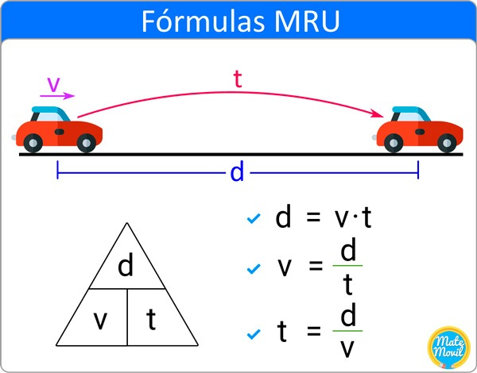

Quiz de MRU.
¿Qué es el MRU?
Moviento de un objeto en linea recta.
Movimiento de un objeto en diagonal.
Movimiento de un objeto en horizontal.
Escoje dos formulas que correspondan al MRU.
d = Vi. t+1/2. a.t^2
s = so + v·t
h = Vt t+5 t^8
De las cuatro opciones, escoje solo dos que representen la diferencia entre MRU y MRUV.
La variación de la velocidad debido a la aceleración que posee un mruv.
Que el pollo esta caliente y el otro esta frio.
La velocidad de desplazamiento de los cuerpos se mantiene constante.
Los hongos son rojos y los pinos no.
¿Qué significa MRU?
Movimiento Rectilineo Uniforme.
Movimiento Recto de Urano.
Mario carreras de la WII U.
En el MRU, ¿El objeto va a velocidad constante?
Si.
No.
Aqui se termina :D.

Alatorre Quezada David / Sainz Felix Jesús Abraham / De León Berumen Eduardo Alonso / Vázquez Juárez Juan(k la foca).